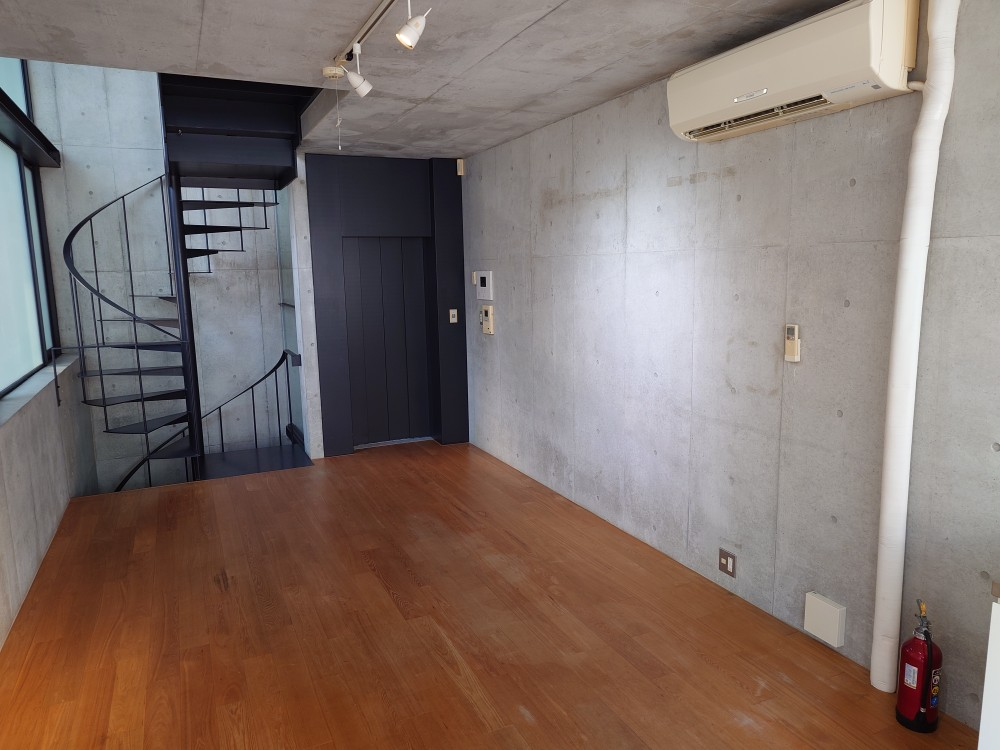
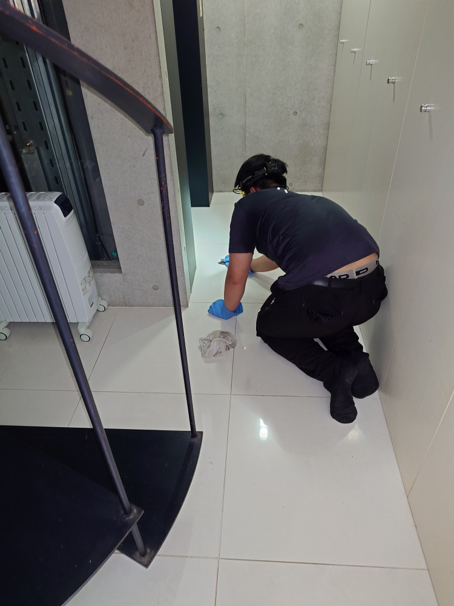
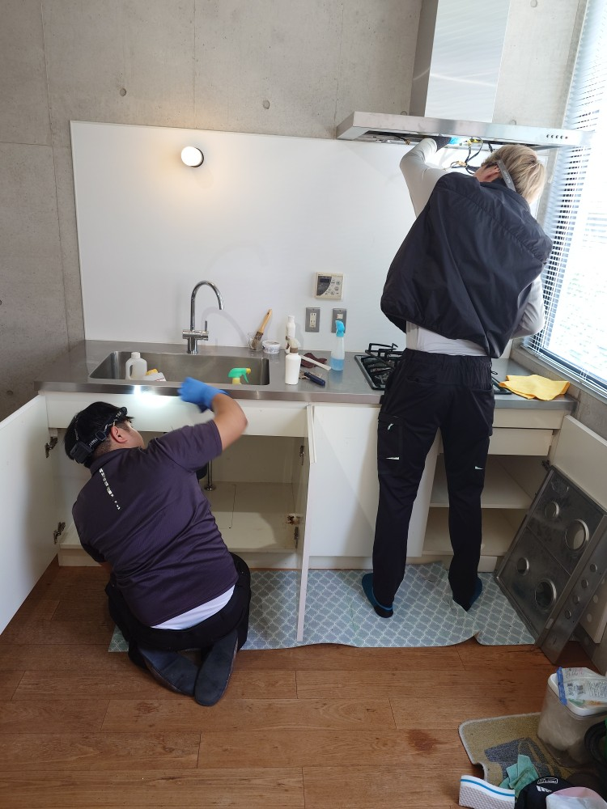
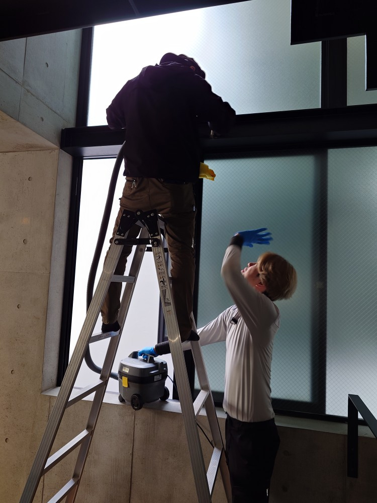
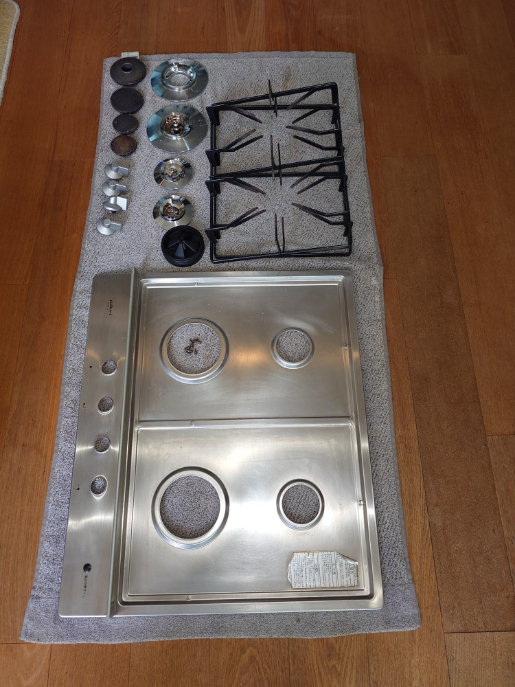
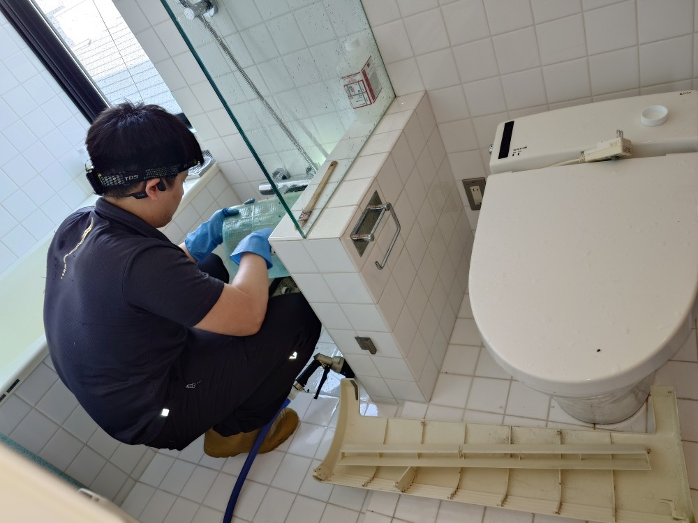
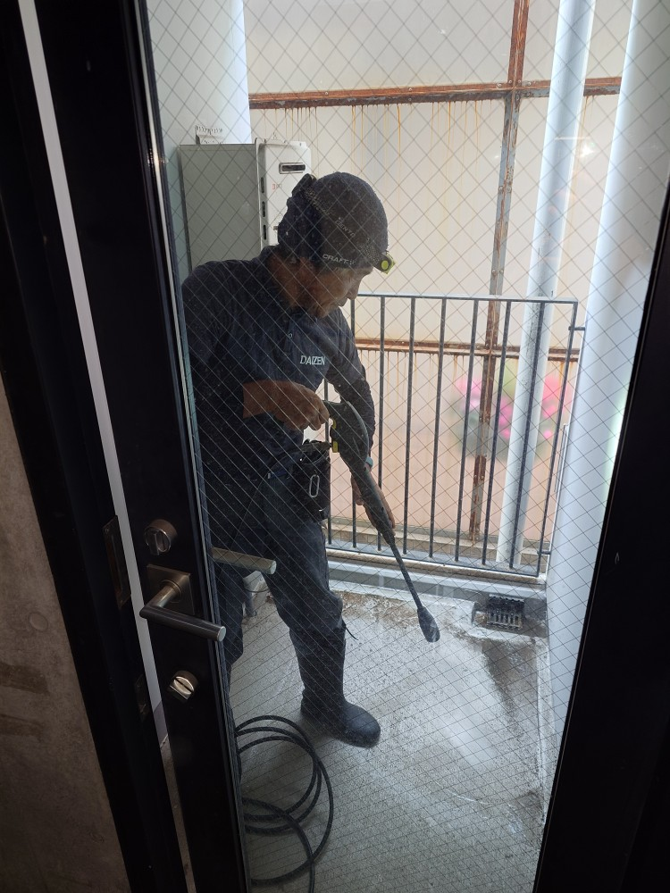
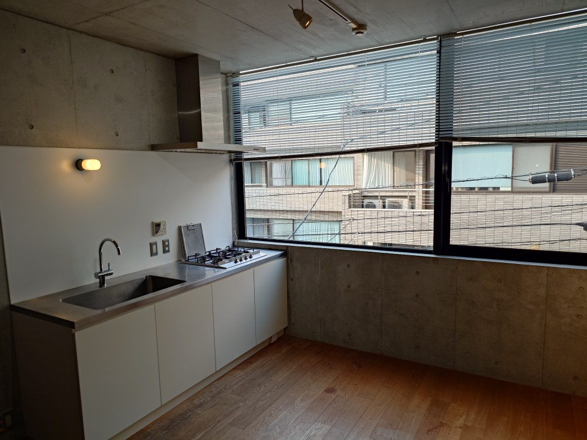
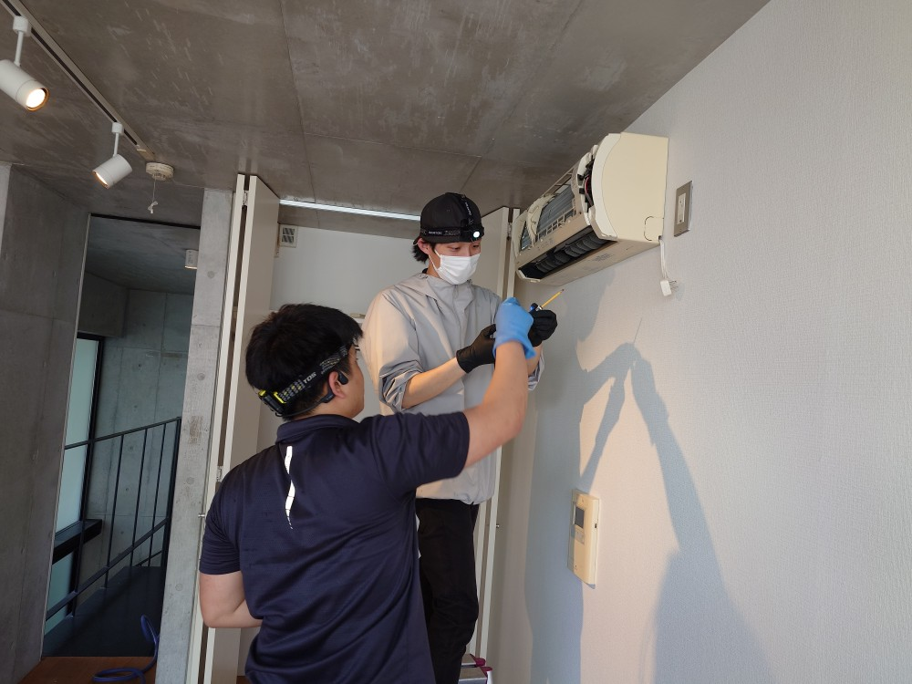
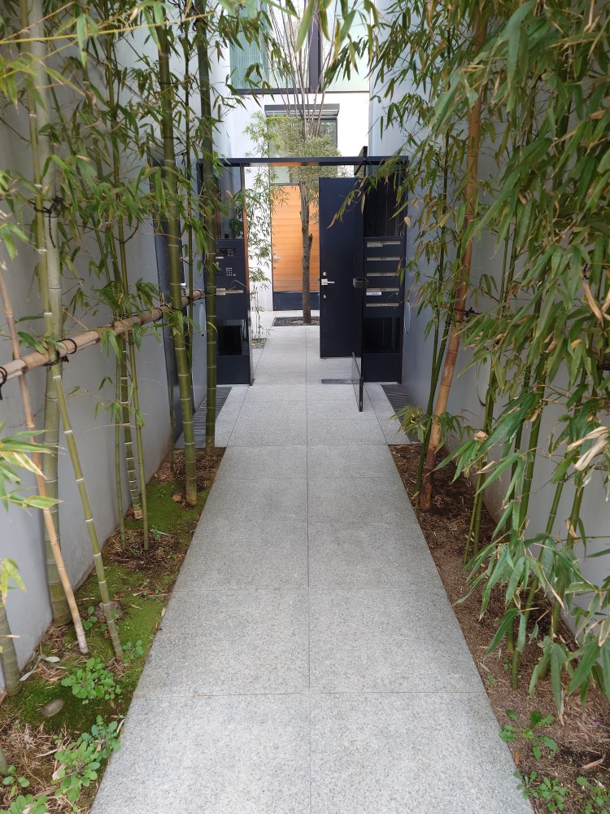

東京都港区白金台の閑静な住宅街M様賃貸・戸建てマンションの転居前空室クリーニングと壁クロス張替えリフォームを実施しました！

東京都港区白金台の閑静な住宅街にあります、4階建て、5棟からなるM様賃貸・戸建てマンションの転居前・空室クリーニングを実施しました！クリーニングターゲットの空室は、壁面の汚れが有り、壁クロス張替えリフォームも併せて実施しました！DAIZENプロフェッショナルクリーニングメソッドを駆使して、6名のDAIZENプロフェッショナルメンバーで、細部の除塵クリーニング、拭き上げクリーニング、水回りプレミアムクリーニング、窓・サッシ・網戸プロフェッショナルクリーニング、ベランダ高圧洗浄クリーニングなどフルセットのスペシャルクリーニングを実施しました！綺麗になってM様に喜んで頂きました！








